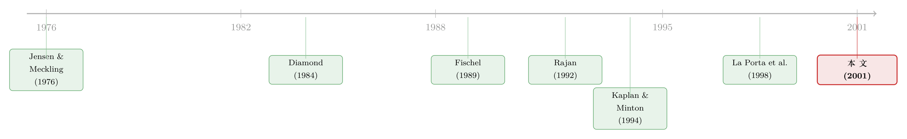

银行家坐进董事会：是来盯梢的，还是来惹官司的？
本文读的是 Kroszner & Strahan (2001, Journal of Financial Economics)：美国大公司里有近三分之一在董事会里坐着一位商业银行家，但他们几乎从不坐进那些"最需要被盯着"的高风险公司——因为美国法律的「衡平居次 (equitable subordination)」与「贷款人责任 (lender liability)」两条原则，会让积极介入的银行在企业陷入困境时反过来吃官司、丢掉债权顺位。于是银行家只去那些大、稳、抵押品多、不靠短债续命的公司，那里冲突最小,监督的好处才划算。
1 一个数字上的悖论
先抛一个看似无足轻重、却越想越奇怪的事实。
银行是天生的监督者。它放贷、收集信息、盯着借款人——用 Diamond (1984) 那个著名的说法,银行做的就是「受托监督 (delegated monitoring)」。既然如此,让一位银行家直接坐进借款企业的董事会,岂不是把这套监督机制装上了涡轮增压?信息流更顺,融资更易,银行还能顺手给市场一个「这家公司不会出事」的认证信号。
按这个逻辑,银行家应该挤满美国公司的董事会才对。
可现实是:在 1992 年的大型美国公司里,只有 31.6% 的董事会坐着一位商业银行家。这个数字本身不算低——三家里就有一家。但只要把镜头拉远,放到国际比较里,它立刻显得格格不入。如该文表 1 所示,在创制人权利相对强势、银行积极介入公司治理的德国,这个比例高达 75.0%;日本是 52.9%。更刺眼的是另一行:在日本,有 42.8% 的大公司,董事会里坐着的是它主办银行 (main bank) 的高管;而在美国,这个数字只有 5.8%。
换句话说:美国的银行家即便上了董事会,也极少是这家公司真正的主要贷款人。
于是一个自然的问题浮出水面:美国的银行家为什么这么"躲着"它们本该去监督的公司? 是监督不值钱吗?显然不是——三分之一的公司还是请了银行家。那到底是什么力量,把银行家从一部分董事会里"劝退"了?
这篇论文的全部张力,都系在这一个问题上。而它给出的答案,不在金融,而在法律。
2 监督的好处,和两笔被低估的成本
要理解银行家的去向,得先把这桩"婚事"的好处和代价都摊到桌面上。
好处这一侧,作者讲得很清楚,而且都指向同一类企业。第一,董事会席位把银行与企业的信息通道焊死了——比起在贷款合同里逐条约定"你要报告什么",一个董事会席位提供的是「随机应变」的灵活性,这对信息越不透明的公司越值钱。第二,正因为下面要讲的法律成本高昂,一个银行家愿意坐上某家公司的董事会,本身就是向市场发出的认证信号:这家公司大概率不会陷入困境。这种「认证 (certification)」对融资成本的压低,在信息不对称最严重的公司——更小、更波动、抵押品更少——身上最为可贵。第三,银行做的是关系生意,它有动机比一般非金融公司的高管更乐意去当外部董事,因为一个董事席位能顺带带来对整个行业的洞察。
所以,单看好处,银行家应该奔向那些小的、波动的、缺抵押品的、嗷嗷待哺的公司。
但真正关键的一步在于成本这一侧,而这正是全文的"反转"。
第一笔成本是经典的「股东—债权人冲突 (shareholder–creditor conflict)」。这是 Jensen & Meckling (1976) 五十年前就讲透的故事:债和股的收益结构不同,股东偏爱高风险项目(上行归我,下行有限责任兜底),债权人则希望公司老老实实保住还款概率(关于这条主线如何贯穿整个公司金融,可参见《债务这副药,为什么不能全吃?——重读 Jensen 和 Meckling 五十年》)。一个银行家坐在董事会里,身上同时背着对股东的「受托责任 (fiduciary duty)」和对自己银行雇主的忠诚——当公司投资风险高、或滑向财务困境时,这种利益冲突会被瞬间放大。
第二笔成本,才是这篇论文真正的"主角",也是它区别于既有文献的地方:美国独有的两条破产法原则。
「衡平居次 (equitable subordination)」与「贷款人责任 (lender liability)」——这两个拗口的法律名词,是理解整篇论文的钥匙。
它们是怎么运作的?在通常那种保持距离的银企关系里,银行可以在公司困境时果断抽贷、收紧条款,完全合法。但是,如果一家银行被认定在企业破产前"积极介入了经营、且行为不公",那么:其一(衡平居次),它在破产清偿中的债权顺位可能被往后排;其二(贷款人责任),它可能要为其他债权人因此遭受的损失承担赔偿,法院甚至判过「惩罚性赔偿 (punitive damages)」。而董事会席位,恰恰会让银行在这类诉讼中受到更严格的审视(Phelan & Collins, 1996)。
法庭上有两套专门针对"董事会里有银行高管"的攻击逻辑:「另一个自我 (alter ego)」理论——银行通过董事席位实际控制了公司,二者本质是一体;以及「内幕信息 (inside information)」理论——董事身份给了银行相对其他债权人的不公平信息优势,使它能抢先自保、把烂摊子甩给别人。Roe (1994) 干脆断言:只有在正式破产前保持完全被动,债权人才能自保。另一位法律评论者说得更直白——"当一个债权人想插手一家陷入困境的债务人的经营时,它应该想想自己'更深的口袋',然后把手揣回兜里。"(Douglas-Hamilton, 1975)
于是悖论解开了一半:好处把银行家拉向高风险公司,这两笔成本却把它们死死按在低风险公司。 银行家最终落在哪里,取决于这场拔河谁更用力。而美国——一个 La Porta et al. (1998) 意义上股东权利相对强势的国家——恰恰用破产法把"成本"这一侧加重了砝码(关于法律保护如何塑造一国金融,可参见《把法律写成一个「被抓的概率」:投资者保护如何长出一国的股市》)。
3 怎么把这个"拔河"摆上数据?
这篇论文没有结构模型,它的全部说服力来自一个朴素却聪明的实证设计:把"好处"和"成本"映射到同一组公司特征上,看净效应往哪边倒。
这一步的精妙之处在于:作者反复强调的几个变量,对好处和成本的预测方向恰好相反。于是任何一个系数的符号,都直接是对"谁赢了"的裁决。
以「波动率 (volatility)」为例(用 1988 年 1 月至 1991 年 12 月的月度股票收益标准差度量):
- 若监督的好处占上风,波动越高 → 信息不对称越严重 → 越需要银行关系 → 银行家上董事会的概率应当随波动率上升。
- 若冲突与贷款人责任成本占上风,波动越高 → 困境风险越大、冲突越尖锐 → 银行家上董事会的概率应当随波动率下降。
同样的逻辑套在其余变量上:
| 变量 | 度量 | 好处占优时的方向 | 成本占优时的方向 |
|---|---|---|---|
| 规模 size | log(总资产) | 负(大公司不靠银行) | 正(小公司更易困境) |
| 资产有形性 tangibility | 净 PP&E / 总资产 | 负(无形多→更不透明→更需银行) | 正(有形多→冲突小、难"操纵") |
| 商业票据评级 | 有=1 | 负(有市场融资替代) | —— |
| 短期融资占比 | 一年内到期债 / 总债 | 正(靠短债→更需银行关系) | 负(短债多→冲突大,银行躲) |
读到这里,识别的逻辑就很干净了:作者并不需要一个外生冲击,他们要的是看哪一侧的预测被数据选中。变量定义也都朴素直接——杠杆率定义为
$$ \text{leverage} = \frac{D}{E + D} $$
其中 \(D\) 为长短期债务的账面总值,\(E\) 为股权的市值;短期融资则单算一年以内到期债务占总债务的比重。所有回归都控制了一位数 SIC 行业哑变量,以吸收行业层面的差异。
数据方面:样本来自 1992 年 Forbes 500(由 Kevin Hallock 提供董事与其主要雇主名单,见 Hallock, 1997),剔除金融机构、以及无法从 Compustat 与 CRSP 取得数据的公司,最终 430 家公司,其中 136 家董事会里有至少一位银行家(称为"banker"公司),这些银行家来自 102 家不同的银行。借贷关系则来自 LPC 的 Dealscan 数据库(覆盖 1988 年至今的大额银行贷款),用来识别"坐在董事会里的那家银行,到底有没有在给这家公司放贷"。
4 数据给出的裁决:成本赢了——但不是简单地赢
结果几乎一边倒地站在"成本"那一侧,但最漂亮的证据恰恰是一个非单调的形状。
先看横截面的"画像"。 该文表 2 比较了 banker 与 no-banker 两组公司的中位数:有银行家的公司更大、更稳定;虽然整体债务/资产比更高,但短期债占比反而更低;有形资产占比更高(这也增强了它们发公开债的能力);也更可能拥有商业票据评级。把这些特征对照上一节那张表,每一项都指向同一个结论——银行家系统性地偏好那些股东—债权人冲突最不重要的公司。
接着,一个自然的问题是:会不会是银行家上了董事会之后,把公司"改造"成了这副稳健模样? 作者直接回应了这个内生性担忧:有银行家的公司,早在银行家上任之前,就已经更大、更不波动、有形资产更多了。也就是说,加一位银行家进董事会,并不改变公司的特征——是公司的特征挑选了银行家,而不是反过来。这一笔,把"反向因果"的解释挡掉了一大半。
然后是全文最有说服力的一击:波动率与银行家在场之间,呈现一种"先升后降"的非线性关系。 银行家上董事会的概率,随波动率先上升、再下降——一个倒 U 形。直觉非常顺:在低风险区间,冲突无足轻重,监督的好处主导,所以波动率升一点反而招来银行家;但越过某个临界点,困境风险陡增,冲突与贷款人责任的成本压倒一切,银行家掉头就走。
这个倒 U 形之所以关键,是因为它不是任何单一力量能产生的——它正是"两股相反力量在不同区间各自占优"的指纹。一个只讲监督好处的故事会预测单调上升,一个只讲成本的故事会预测单调下降,只有"权衡"才会画出这条先升后降的曲线。
再往下一层:借贷关系。 与德日不同,坐在美国董事会里的银行,极少是公司的主要贷款人——这本身就再次印证了冲突与贷款人责任在劝退积极介入。而且,当董事席位上的银行确实在给这家公司放贷时,上面那条风险—在场的非线性关系会变得更陡峭,且随借贷关系越重要而越明显。这说明成本不是抽象的法律幽灵,而是随"银行在这家公司身上的风险敞口"实打实地加重。
那银行图什么? 既然借贷关系不像是银行派高管上董事会的主要好处,作者转而检验另一种间接收益:行业专长。结果与之吻合——有董事会代表的银行,会向这些董事所在公司的行业做出不成比例更多的放贷。坐进一家公司的董事会,买到的是对整个行业的专门知识。
最后是两道稳健性检验,把"这是银行家独有的现象"钉死。 其一,投资银行家、以及一般外部董事,并不遵循上述同一套模式——既然如此,作者识别出的就是银行家特有的配置逻辑,而非泛泛的"外部董事都这样"。其二,与日本(Kaplan & Minton, 1994 发现外部董事常被派往业绩差的公司)不同,美国的银行家并不会一开始就涌向业绩糟糕的公司。这一对比尤其漂亮:同样是银行家上董事会,日本是去"救火"和接管困境,美国却是去"锦上添花"——制度的差异,被两国数据照得清清楚楚。
5 文献脉络
把这篇论文放回它生长的那片土壤,它的位置就格外清晰。
最上游,是 Jensen & Meckling (1976) 奠定的代理成本与债—股冲突——这是整座大厦的地基,没有"股东偏好风险、债权人偏好安全"这个原始张力,后面一切都无从谈起。与此并行的另一条线,是 Diamond (1984) 把银行刻画为"受托监督者",以及 Smith & Warner (1979) 关于债务契约如何保护贷款人的经典分析——一边讲银行能监督,一边讲债权人需要保护。
接着,法律与经济学的交叉地带长出了关键一支:Fischel (1989) 系统分析了贷款人责任的经济学,Roe (1994) 则论证了"唯有被动方能自保"。正是这一支,把抽象的代理冲突落实成了美国银行不得不算的一笔法律账。
与此同时,比较公司金融在 1990 年代蓬勃发展:Edwards & Fischer (1994) 之于德国、Hoshi 等人与 Kaplan & Minton (1994) 之于日本,记录了银行在那些国家如何积极持股、积极进入董事会;而 Rajan (1992)、Dewatripont & Tirole (1994) 则从理论上指出,允许银行持股本可以缓解甚至消除债—股冲突——这恰是美国因 Glass-Steagall 等监管而做不到的事。再往后,La Porta et al. (1998, 1999) 的"法与金融"把"创制人权利 vs. 债权人权利"的保护强度,提升为解释各国金融体系差异的总纲(这条法律起源的线索,亦可参见《法律是行李,风土是地基》)。

本文的位置,就站在这几条线的交汇处:它接住了 Jensen-Meckling 的冲突、Diamond 的监督、Fischel-Roe 的法律成本、以及 La Porta 的跨国制度视角,用一个 Forbes 500 的横截面,把"美国银行家为何如此配置"做成了一道可以被数据裁决的实证题。它最直接的贡献,是把"银行家在董事会的稀缺"从一个观察,变成了一个由可识别的法律成本驱动的结果。也正因如此,它对"债权人控制权一旦激活会发生什么"这一更广的议题有所呼应(可对照《把公司这个「黑箱」拆开:契约一违约,债主把资源搬去了哪里》)。
6 评论与延伸（Q&A + 研究方向）
(a) 几个可能的疑问
Q：这篇文章只是个横截面回归,凭什么谈"因果"?
严格说,它没有外生冲击,识别强度是"中等"。但它的聪明之处在于让好处与成本对同一变量做出相反预测,于是系数符号本身就是裁决;再加上"银行家上任前公司就已稳健"这一证据挡住反向因果,以及"投资银行家/外部董事不遵循同一模式"挡住泛泛的董事故事。它不是干净的自然实验,但它把能想到的替代解释逐个削掉了。
Q：倒 U 形真的非要用"权衡"来解释吗?会不会只是非线性的噪音?
关键在于它的方向是先升后降,而且当董事席位上的银行确有放贷时,这条曲线还会变陡。单一力量(只有好处或只有成本)只能给出单调关系;而"成本随风险敞口加重"这一交互效应,恰恰是"权衡"机制特有的、可证伪的预测。这比一条孤立的二次项要扎实得多。
Q：为什么不直接比较银行家上任前后公司的变化(事件研究)?
作者确实看了"上任前"的特征来论证选择效应,但样本是 1992 年的单期横截面,缺乏长面板,难以做干净的前后对比。这也正是本文识别上的主要软肋:它讲清了"谁会有银行家",却没能完全讲清"有了银行家之后会怎样"。
Q：德、日比例高,真的是因为它们的破产法对积极债权人更宽容吗?会不会只是银行能持股?
两者都有,而且互相强化。德日的反垄断法虽限制持股比例,但允许银行持股(Rajan, 1992; Dewatripont & Tirole, 1994 指出持股能对冲债—股冲突),其破产法也不像美国这样给"挑战高级债权人行为"留这么大空间。本文的贡献不是孤立地证明某一条,而是指出美国把"成本侧"系统性加重了——衡平居次与贷款人责任是其中独有的一环。
Q：那 1999 年的 Gramm-Leach-Bliley 法案放松持股限制后,美国银行家会不会涌入更多董事会?
作者明确泼了冷水:即便允许持股,衡平居次与贷款人责任依然在,这两条原则本身就足以劝退银行积极介入。换言之,放开持股是必要的一步,但不充分——制度的另一半枷锁没动。这正是文章对政策的核心警示。
Q：银行家上董事会到底给银行赚了什么?如果连主要贷款人都不是。
数据指向行业专长而非单笔借贷关系:有董事代表的银行,会向该董事所在公司的行业不成比例地多放贷。坐进一家公司的董事会,买到的是对整个行业的信息与判断力,这才是间接但更持久的回报。
(b) 几个可能的研究问题与提案
提案一:Gramm-Leach-Bliley 之后的"双重实验"。 【经济故事】本文预言:仅放开持股、而衡平居次与贷款人责任不变,银行家进入董事会的格局不会大变。这是一个现成的可证伪预测。【可行性】中。可用 1999 年前后的 BoardEx/ISS 董事数据 + Dealscan,做"放开持股"这一时点的前后比较;难点在于同期还有别的冲击(并购浪潮、2001 衰退),需要用未受影响的对照组或行业差异做双重差分。
提案二:把"贷款人责任"的强度做成跨州/跨时的变异。 【经济故事】贷款人责任的判例尺度在不同州、不同时期并不一致(正文引用的关键判例都带有强烈的辖区色彩)。若能把"某州贷款人责任收紧"作为冲击,本文的因果链就能从相关升级为准实验。【可行性】中偏低。需要法律数据库手工编码判例强度,且银行决策的辖区归属难以精确锁定;但一旦做成,识别力会显著超过本文。
提案三:搬到公司债与信用市场——债券持有人版的"董事会悖论"。 【经济故事】本文讲的是银行贷款人。但大额债券持有人(如保险公司、债券基金)在企业困境时同样面临"积极介入 vs. 衡平居次/贷款人责任"的权衡。它们会不会也系统性地回避高冲突发行人?这直接关系到困境债的治理与回收。【可行性】中。可用 Mergent FISD/eMAXX 的债券持有人数据,匹配发行人的波动率、有形资产、短债占比,复制本文的"非线性"检验;数据可得,识别逻辑现成。
提案四:外资银行 vs. 本土银行的董事会行为差异。 【经济故事】外资银行可能不受同样的本地法律威慑、也可能信息劣势更重。它们进入美国公司董事会的模式,会比本土银行更"激进"还是更"保守"?这能把"法律威慑"与"信息成本"两条机制拆开。【可行性】中。需要识别董事所属银行的国籍并匹配跨境放贷数据,样本量可能偏小,但机制上很干净。
7 我的判断
贡献上,这篇论文最值得称道的,是它把一个看似纯描述性的国别差异("美国银行家少上董事会"),转化成一个由可命名、可度量的法律成本驱动的实证命题,并用一个非单调的形状(随风险先升后降、且随借贷敞口变陡)给出了"权衡"机制的指纹式证据。它把法律—金融、银行监督、代理冲突三条文献,在一张 Forbes 500 的横截面上漂亮地缝合了起来。
对识别的担忧有两点。其一,核心证据终究是单期横截面 + probit,虽然"上任前已稳健"和"投行家不同模"这两道防线削弱了内生性,但缺乏面板与外生冲击,"法律成本"始终是作为最优解释而非被直接测度的因果变量登场的——文章测的是公司特征,法律是讲故事时请来的主角。其二,样本只覆盖大公司,而理论预测里"最需要监督、也最怕冲突"的恰恰是中小公司,可惜没有它们的借贷关系数据(作者也坦承这一点)。
后续想看到的,首先是把贷款人责任的辖区/时间变异做成准实验,让那位"主角"从幕后走到台前被直接测量;其次是 Gramm-Leach-Bliley 之后的长期跟踪,检验作者那个"放开持股也不够"的冷峻预言到底应验了没有;最后,我个人最感兴趣的,是把整套逻辑搬到公司债持有人身上——如果债券大户也在系统性地回避高冲突发行人,那么这条"法律塑造谁来监督"的暗线,影响的就不只是董事会名册,而是整个信用市场的治理与定价。
参考文献
- Diamond, D. (1984). Financial intermediation and delegated monitoring. Review of Economic Studies 51, 393–414.
- Dewatripont, M., & Tirole, J. (1994). A theory of debt and equity: diversity of securities and manager-shareholder congruence. Quarterly Journal of Economics 109, 1027–1054.
- Edwards, J., & Fischer, K. (1994). Banks, Finance, and Investment in Germany. Cambridge University Press.
- Fischel, D. (1989). The economics of lender liability. Yale Law Journal 99, 131–154.
- Hallock, K. (1997). Reciprocally interlocking boards of directors and executive compensation. Journal of Financial and Quantitative Analysis 32, 331–344.
- Jensen, M., & Meckling, W. (1976). Theory of the firm: managerial behavior, agency costs, and capital structure. Journal of Financial Economics 3, 305–360.
- Kaplan, S., & Minton, B. (1994). Appointments of outsiders to Japanese boards: determinants and implications for managers. Journal of Financial Economics 36, 225–258.
- Kroszner, R. S., & Strahan, P. E. (2001). Bankers on boards: monitoring, conflicts of interest, and lender liability. Journal of Financial Economics 62(3), 415–452.
- La Porta, R., Lopez-de-Silanes, F., Shleifer, A., & Vishny, R. W. (1998). Law and finance. Journal of Political Economy 106, 1113–1155.
- Rajan, R. G. (1992). A theory of the costs and benefits of universal banking. CRSP Working Paper No. 346, University of Chicago.
- Roe, M. (1994). Strong Managers, Weak Owners: The Political Roots of American Corporate Finance. Princeton University Press.
- Smith, C., & Warner, J. (1979). On financial contracting: an analysis of bond covenants. Journal of Financial Economics 7, 117–161.